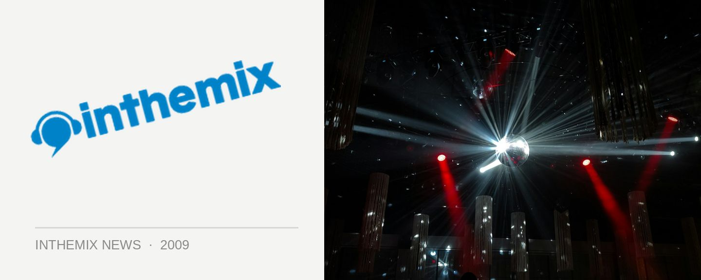

Parklife ranks with world's greatest festivals
For those who rank the national Parklife tour as one of the choice moments on the festival calendar, it appears you’re not the only ones. Global news service CNN has ranked the festival as one of the world’s finest, mentioning it in the same breathe as tried-and-tested international favourites like Glastonbury, Exit, Lollapalooza and Roskilde!
“The Parklife series of one-day music festivals kicks off the summer festival season across Australia,” the travel section of CNN quite correctly points out, referring to the fact that once Parklife kicks off, it’s festival mayhem until pretty much Easter.
“The dance-focused fests have featured heavyweights Justice, MIA, and Muscles over the past two years… so be prepared for a long one if you’re one of the estimated 100,000 people attending a Parklife gig in one of several cities across Australia at the end of September.”
What do you think of CNN’s choice? Here at ITM we reckon that with the breadth of quality acts featured in this year’s lineup, Parklife easily stands shoulder to should with some of the world’s finest festivals. If you’re feeling the same way, enter ITM’s massive competition to win your own private cabana at this year’s festival!
The national Parklife tour is proudly presented by ITM! Keep your eyes peeled to our Festival Page at inthemix.com.au/parklife and check out the national tour dates below…
Sat 26th Sep – Botanic Gardens & Riverstage, Brisbane
Sun 27th Sep – Wellington Square, Perth
Sat 3rd Oct – Birrarung Marr, Melbourne
Sun 4th Oct – Kippax Lake, Moore Park, Sydney
Mon 5th Oct – Botanic Park, Adelaide